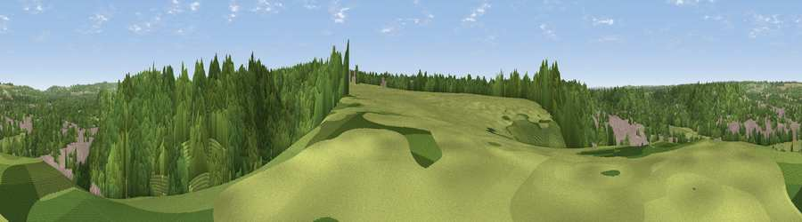

Viewpoint near Godalming
#38239 in England · top 57% of its area beats it · near GodalmingThe view, rendered

A 360° render of this exact spot computed from the terrain model, tree cover and land cover — summer colours, afternoon light, calibrated against photographs of famous viewpoints. Real trees, hedges and buildings will differ in detail.
The panorama
Grey silhouette: terrain skyline in each direction (720 bearings, Earth curvature and refraction included). Dashed green: skyline with trees (+15 m) and buildings (+8 m) as obstacles. Blue strip: how far the ground is visible on each bearing.
Where the view opens
Wedge length = distance to the farthest visible ground on that bearing (vegetation-aware). Rings at 10, 25 and 50 km.
What fills the view
51% woodland · 31% built-up · 18% grassland ·
Angular shares of the visible panorama (visual magnitude), not map area. Landscape diversity 0.46 (0–1 Shannon).
Key numbers
More beautiful places nearby
The staircase of upgrades: each row has a higher view potential than everything closer. Driving times are estimates from straight-line distance, calibrated against real road routing — check an actual route before setting out.
| Place | Direction | Drive | Score |
|---|---|---|---|
| Viewpoint near Bramley | ENE · 2 km | ~5 min | 51.4 |
| Hydon's Ball | S · 4 km | ~9 min | 60.2 |
| Viewpoint near Guildford | N · 5 km | ~11 min | 65.4 |
| Viewpoint near Compton | NNW · 5 km | ~11 min | 66.7 |
| Viewpoint near Hascombe | SSE · 6 km | ~12 min | 70.1 |
| Viewpoint near Fernhurst | SSW · 16 km | ~28 min | 75.1 |
| Barlavington Down | S · 28 km | ~45 min | 77.3 |
| Viewpoint near Cocking | SSW · 28 km | ~45 min | 77.6 |
51.18439, -0.60171 · source: screening · position refined by local search. Computed location — check access rights before visiting.